A fully non-destructive photo retouching program providing a complete workflow from RAW image development to printing
In this tutorial we will see how it is possible to apply selective adjustments using specific color channels as masks.
Here the technique is used to darken the sky in a landscape image, without touching the clouds and the ground. As the mask will be derived directly from the image itself, the sky adjustment will blend seamlessly with the rest of the image.
The final result will look like this:
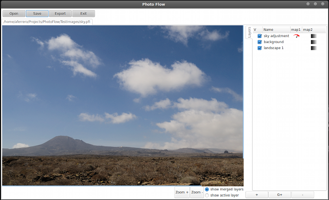First of all you need to open a suitable image. The one that is used in this tutorial is available here, and is called landscape1.tif.
Assuming that you have followed the instructions for building photoflow from sources (otherwise please see here) and that you extracted the testimages.zip file in your home directory, you can open the landscape1.tif image in photoflow like that:
$ ./src/photoflow $HOME/TestImages/landscape1.tif
Once the image is opened, the first thing we have to do is to change the name of the bottom layer: double-click on the name of the layer ("background" in this case) in the list at the right of the image and change the name to "landscape 1" as shown below, then press the "OK" button to close the dialog.
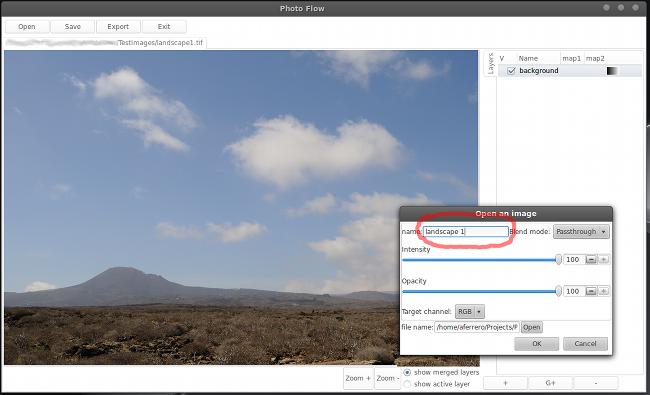In the next step we will create a "buffer" layer, which we will call "background". This type of layer does not perform any processing, and is simply used to define a "label" to a given point in the editing workflow, so that we can refer to it at a later point.
To add a new layer, you have to click on the "+" button at the bottom of the layer list and choose the desired type of layer in the dialog that pops-up. You should get something like in the image below. Click OK to confirm and close the dialog.
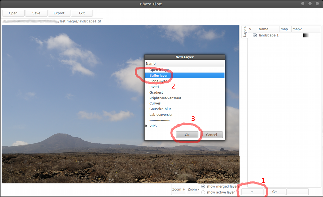When the new layer is created, a configuration dialog is immediately opened in order to set the initial values of the various parameters. In this case, since the buffer layer does not do any processing, there are few parameters that can be confgured. For the moment, we set the name of the layer to "background" and we make sure that the target channel is set to "RGB" and the blend mode to "Passthrough", like in the screenshot below. Press the "OK" button to confirm the changes and close the dialog.
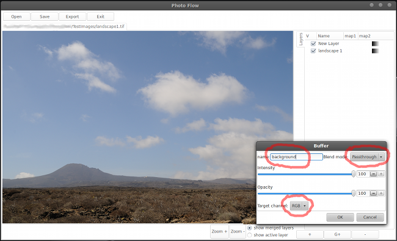At this point we are ready to add a "Curves" adjustment to selectively darken the sky in the image.
Add again a new layer, this time selecting the "Curves" tool in the tool selection dialog (see screenshot below).
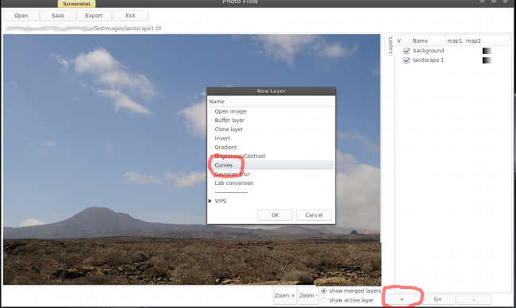In the "curves" configuration dialog, click on the diagonal line of the "RGB" curves to create a new control point, and then drag the point downwards like in the screenshot below. You can also set the control point position precisely by putting the X and Y coordinates in the numerical fields below the graph.
The picture will most likely be too dark. Instead of moving the control point up again until you find the best result, it is much easier to tune the overall intensity of the adjustment using the correspoinding slider in the top part of the dialog. You can also set the desired intensity value directly in the numerical field near the slider.
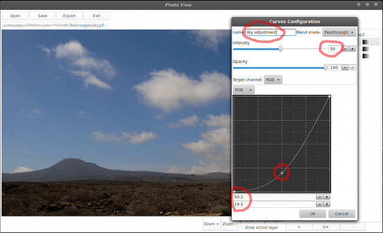At this point, the sky looks approximately as we would like, however the rest of the image also got darker, which is not what we would like to obtain. The goal is to selectively darken the portions of the image that are predominantly blue, and leave the rest untouched.
Most of the image adjustment tools in photofow have an "intensity" parameter that can be varied in order to adjust the "strength" of the result, like in the case of the Curves tool that we are using to edit the sky. The "intensity" parameter directly influences the processing step, in a way that is generally tool-specific. In the case of the Curves tool, an intensity of 50% brings each control point halfway between the position which is set in the graph and the diagonal line. Therefore, setting the intensity to zero would effectively bring all the control points along the diagonal line, and hence the output would be identical to the input (i.e. no effect).
Moreover, the intensity value can also be defined pixel-by-pixel by associating a greyscale "intensity map" to a given layer. In this case, the intensity will be maximal wherever the greyscale value in the map is white and zero where the map is black; intermediate intensity values are computed according to the greyscale value in the map. The maximum intensity corresponds to the value defined in the tool configuration dialog (50% in the case of the sky darkening).
In this specific case, we want to isolate the portions of the image that are predominantly blue, therefore we need to create a greyscale map that is mostly white wherever the image is blue, and mostly black elsewhere. Moreover, we will try to produce smooth transitions so that the darker sky will merge seamelessly with the clouds and the landscape.
Whenever it is necessary to isolate a given color in the image, the "a" and "b" channels of the Lab colorspace are a good starting point. For example, the pixel values in the "b" channel are below 50% wherever the image contains a blue component, and above 50% wherever there is a yellow component; the higher the deviation from 50%, the higher the color saturation of the image.
The steps to create the sky intensity map will therefore be the following:
Double-click on the small icon immediately at the right of the "sky adjustment" label in the layer list to start editing the intensity map associated to the "sky adjustment" layer (as sown in the screenshot below).
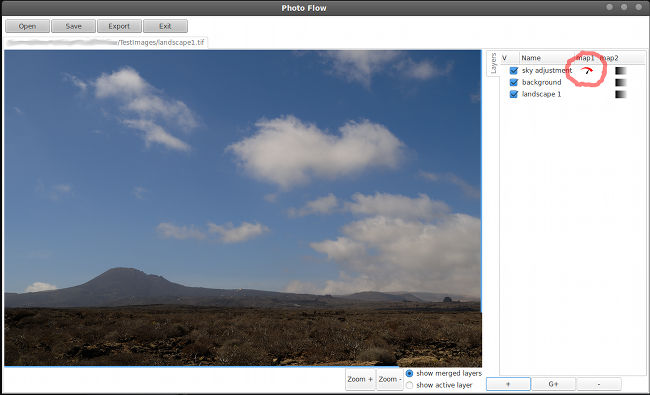This will create a new layer list, called "intensity (sky adjustment)" and that is associated to the intensity map of the "sky adjustment" layer. Now let's add a "Clone" layer to the intensity map, a shown below:
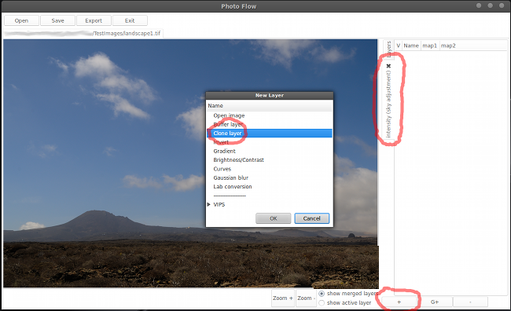In the configuration dialog that will pop up, you need to select the "background" layer and the "b" channel as the source channel; set also the layer name to "b channel" so that it is easier to identify.
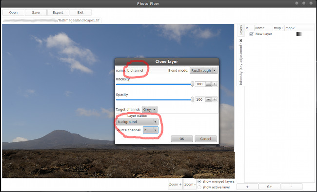Now we have to add a "Curves" adjustment in order to set the blue portion of the image to white and the rest to black. First of all we need to create a new "Curves" layer above the "b channel", as show below:
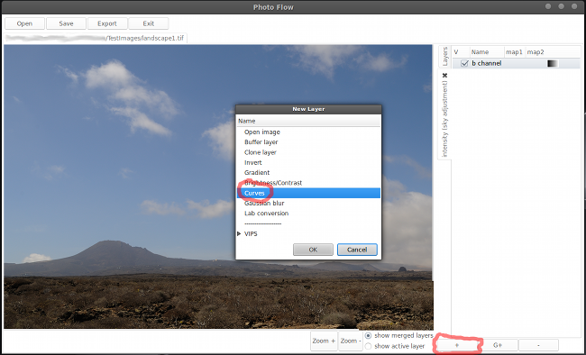Now you have to drag the two extreme control points like shown below, in order to create a linear transition between (40.0,100.0) and (50.0,0.0). Use the numerical fields to set the values precisely. The optimal value for the upper point might change from image to image, so take it as a first guess.
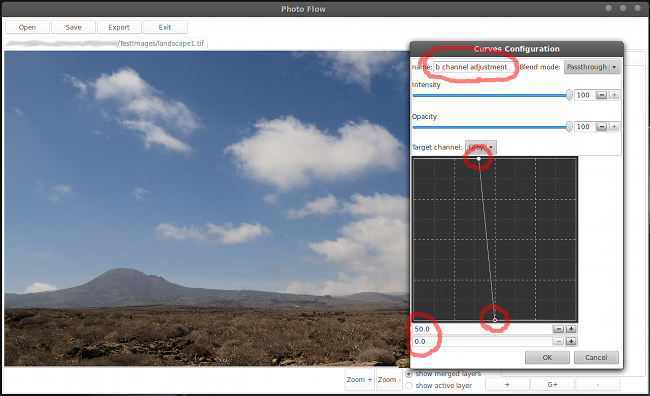You can now check the result of the sky adjustment by toggling the visibility of the "sky adjustment" layer on and off (using the check button at the left of the layer name). You can also pan and zoom while the "Curves" configuration dialog is still open, and even open more than one configuration dialog at the same time (although at some point your desktop might become a little bit too crowded...).
The sky in your image should now look significantly darker, while the clouds and the landscape should be mostly unmodified. As all the adjustments that we have applied are non-destructive, you can tweak the result as much as you like without ever modifying your original image.
You can now save your work to disk, either in the native photoflow format (with extension ".pfi") or in any raster image format supported by VIPS on your system (like Jpeg, TIFF, PNG...). Saving into a ".pfi" file has the advantage that the layer structure gets stored to disk in XML format, so that you can resume your editing exactly from where you stopped, for example for further tweaking some settings. It is important to note that no image data is saved with the ".pfi" file, therefore the original image file is also needed in order to re-open the image correctly. On the other hand, the size of the ".pfi" file is very small and it gets saved almost instantly, therefore you can frequently save the intermediate steps of your work while editing an image, as well as several versions with different settings, without any risk to fill-up your hard disk!
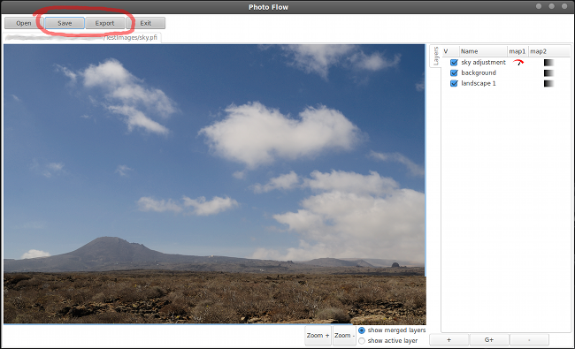Last but not least, all the adjustments that we have applied did not involve any copy-and-paste operation: for example, the layer cloning operation is applied dynamically on the imge data while it is being processed. This means that if you now change the input image the result will be updated immediately and automatically (for example the "b channel" layer will copy the data from the new image).
To change the input image, just double click on the name of the bottom "landscape 1" layer to pop-up the corresponding configuration dialog, and then choose a different image like shown below:
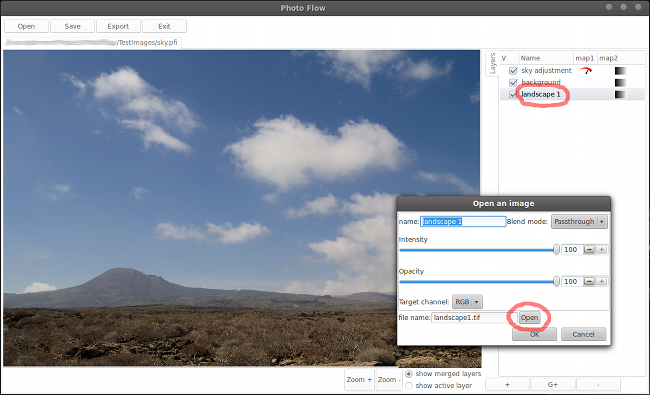The image you choose does not need to be in the same format or of the same size as the old one: everything will be updated accordingly. However, for best results I suggest you to choose an image with at least 16-bits per channel, as otherwise you are very likely to get some banding in the sky region due to the darkening technique used here.
{kind=link}
{kind=link}
{kind=link}
{kind=link}
{kind=link}
{kind=link}
{kind=link}
{kind=link}
{kind=link}
{kind=link}
{kind=link}
{kind=link}
{kind=link}